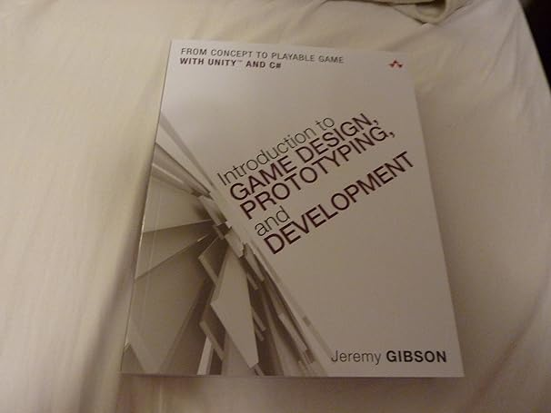

My Game Development Journey
Since middle school, I have always wanted to make my own video games - I used to tell myself that I would get around to learning how when I had more time. Recently, someone encouraged me to stop waiting for the perfect moment and just start learning. I'm really glad they did, because I think in truth I was afraid of trying to learn games or tell anyone about my interest in games, because I felt like the first ones would turn out poorly.
Jeremy Bond's Game Development Book
After I joined WolverineSoft, I began reading the recommended book by Jeremy Bond (From the MSU Game Dev program). Something that stood out to me was the communities openness to those interested in game development.
As of this moment you are a game designer, and I want you to say it out loud: "I am a game designer"
It's embarrassing, but I try my best to say that I want to open an indie studio aloud to as many people as I can, because I hope that if I say it enough, it will become real one day.
My first game: Frostbound - A Supernatural Murder Mystery
I recently finished my first game FROSTBOUNDwhich is now live on itch.io. It features the following:
- ~10k words
- Branching narrative paths
- 3 endings
- LGBT Cast of Characters
- Submitted for the Winter VN Jam
- Developed with my little sister
My next game: Forever Yours, The Devil
At the IGDA, Larry Kuperman said "You're only as good as your last game, you're only as good as your next game." After my last game, my sister and I were able to recruit a group of artists, voice actors, composers, and writers for the Sealed with a Kiss jam by DevTalk.